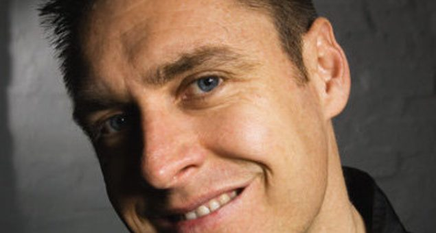

Transmission waves its final farewell


Sydney’s Transmission parties have been the city’s benchmark for big parties over the past 14 years, staging just under 50 events since 1996 and entertaining more than 160,000 punters. In that time DJ Nervous AKA Simon Coffey and crew have taken the brand from its humble beginnings at Sublime’s old Pitt Street venue, to some extremely memorable all-night events at the Metro earlier in the decade and finally, the current arena-style home at the massive Olympic Sports Centre in Homebush. Now, it’s time to wave the brand goodbye with one final party.
DJ Nervous will be stepping up again to helm the last Transmission, and it’ll mark his final DJ set before he hangs up his headphones for good. “I feel as though I’ve done all that I can with the Transmission brand,” he told ITM. “14 years is enough, and I want to take it out on a high.” Never fear though, as he’ll be continuing his involvement behind the scenes at the tougher end of the Australian dance scene. “Of course, I’ll be continuing to work with the harder styles.”
By his side on the evening will be all the old-school Transmission favourites like John Ferris, Pee Wee Ferris, Chromatic, Nik Fish and Bexta, and there’s an impressive showing of hard dance international talent on the lineup that includes Headhunterz, Wildstylez and Project One. The organisers promise they’ll be pulling out all the stops to make the final Transmission the most memorable yet , so expect plenty of extra special surprises on the night.
The Transmission brand has hosted some impressive international talent over the years – everyone from Paul van Dyk, Sean Tyas and Marcel Woods, to hard dance icons like Yoji, Scott Project, Donkey Rollers and Showtek. More importantly though, Transmission parties have been known for pushing the envelope in terms of technology and production, boasting some of the best lights, lasers and visuals seen at any dance event around the country.
Come relive your favourite Transmission memories when Transmission’s Final Farewell hits the Sydney Olympic Sport Centre on Saturday 30th May. Stay tuned to ITM for more details!